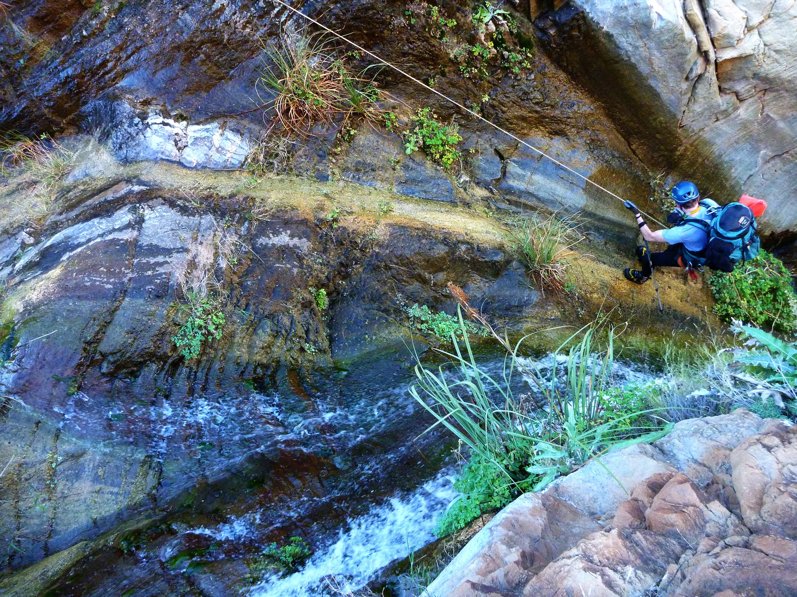

Define & Map
Advance shared definitions and typologies for springs and strengthen the global inventory and knowledge base needed to understand where springs occur.
The IUCN Global Springs Task Force brings together expertise across disciplines and regions to define, map, assess, prioritize, and guide the conservation of springs worldwide.

Springs can support highly distinctive biological communities, including species found nowhere else. They also provide water, refugia, cultural values, and critical connections across landscapes.
Despite their importance, springs remain underrepresented in global freshwater conservation. Definitions and classifications vary, inventories are incomplete, condition and protection are unevenly assessed, and conservation priorities are not yet understood at a global scale.
The Task Force is designed to help close those gaps by building a shared scientific and conservation framework that can support action around the world.
The Alliance is being built as a permanent platform capable of supporting multiple global initiatives over time. The IUCN Global Springs Task Force is the first major initiative launched through that broader movement.
It begins with a fundamental need: creating the shared knowledge, assessment, priorities, and guidance necessary for springs conservation to advance globally.
As the Alliance grows, additional initiatives can emerge around restoration, capacity building, regional collaboration, conservation finance, community stewardship, monitoring, and other needs identified by the global springs community.
Advance shared definitions and typologies for springs and strengthen the global inventory and knowledge base needed to understand where springs occur.
Advance approaches for evaluating spring-dependent biodiversity, ecological and hydrological condition, threats, and conservation status.
Identify globally significant springs, conservation gaps, threatened systems, and opportunities for integration with existing conservation mechanisms.
Develop practical guidance, tools, and capacity that can help governments, communities, practitioners, and conservation organizations improve spring stewardship.
Build the network, strengthen common terminology and typology, and establish the foundations for global mapping and inventory.
Advance biodiversity, condition, threat, and protection assessments while expanding the global evidence base.
Identify conservation priorities and pathways for incorporating springs into global and regional conservation mechanisms.
Translate knowledge into guidance, training, tools, and approaches that support implementation and long-term stewardship.
Springs face pressures from groundwater extraction, climate change, pollution, development, land-use change, invasive species, and other threats. For many spring systems, the ecological consequences can be severe long before their importance is widely recognized.
In 2025, the IUCN World Conservation Congress adopted Resolution 016, Springs under threat: mobilising urgent action for neglected freshwater systems, calling for coordinated global action and an inter-Commission Task Force involving the Species Survival Commission, World Commission on Protected Areas, and Commission on Ecosystem Management.

Springs can change rapidly when groundwater systems, climate, or surrounding landscapes are altered.
The Task Force is an inter-Commission IUCN effort bringing together expertise from the Species Survival Commission, World Commission on Protected Areas, and Commission on Ecosystem Management.
Its work is intended to draw on scientists, conservation practitioners, Indigenous knowledge holders, policy experts, protected-area managers, institutions, and partners from around the world.
Coordination and institutional support are being provided by the Spring Stewardship Institute in the United States and the Council for Scientific and Industrial Research in South Africa.
The Global Springs Alliance is designed to grow with the needs of the springs community. The Task Force establishes a global scientific and conservation foundation. Future Alliance initiatives can build from that foundation to accelerate implementation, investment, restoration, stewardship, and collaboration around the world.
About the Global Springs Alliance →